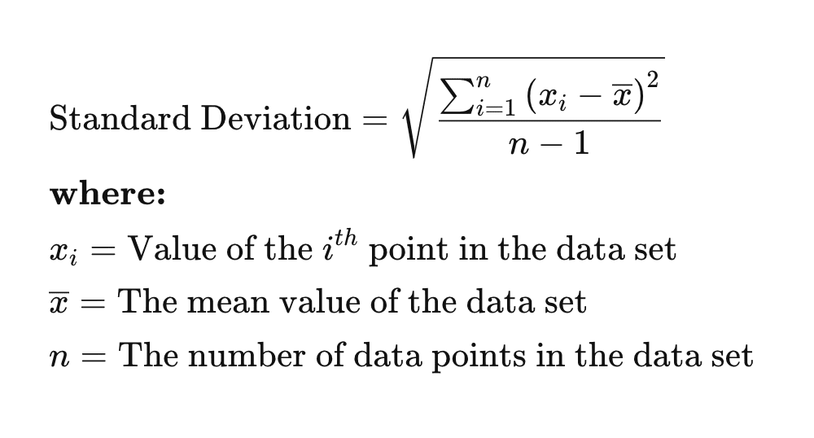
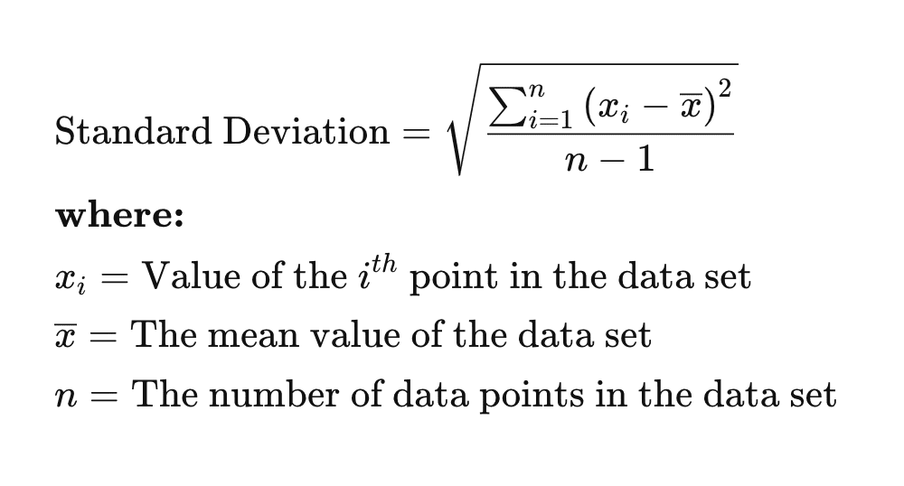
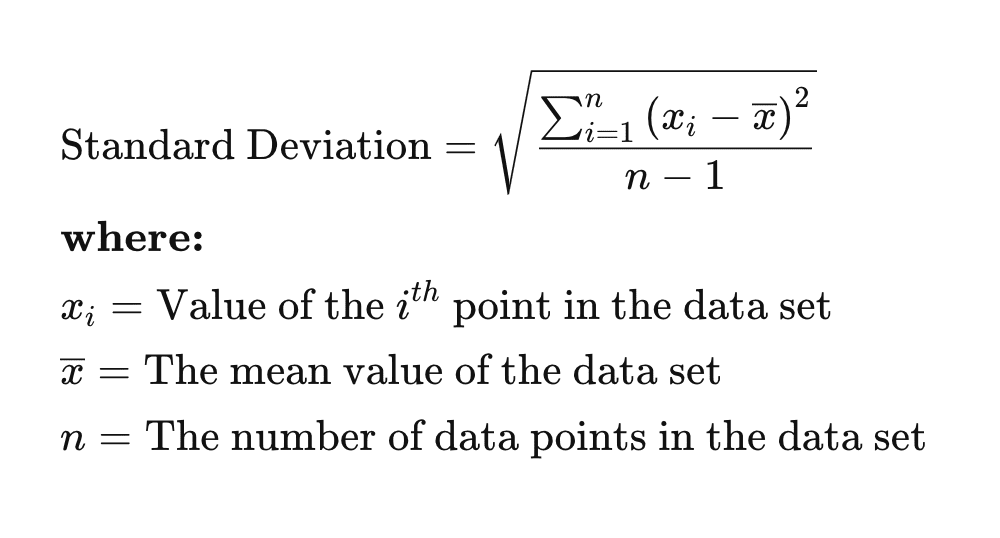

text here
 


Table of contents |
|---|
| Abstract |
| Introduction |
| Analysis and discussion |
| References |
BITCOIN blc nnnnnnnnn
The normal distribution is often used as an easy way to model how stock prices change over time. It assumes that returns move around an average value in a fairly even and predictable pattern. This makes it straightforward to estimate volatility and to work out how likely different price movements are. The approach has been important in the early development of financial models and risk-management tools. However, real markets do not always behave in such a tidy way eg. the finacial crisis of 2008 and the DotCom bubble of 2000, where stock prices had a heavy decline. Stock returns can show sudden jumps and more extreme changes than the normal distribution allows for. Even so, it is still a useful starting point and a easy to understand simple benchmark for comparing more realistic models.
Introduction section
text here

StatMuse. (2025) Nvidia Stock Price Historical October 2025. StatMuse. Available at: https://www.statmuse.com/money/ask/nvidia-stock-price-historical-october-2025
Larsen, R.J. & Marx, M.L. (2012) An Introduction to Mathematical Statistics and Its Applications. 5th ed. Boston: Pearson.
Hull, J.C. (2018) Options, Futures and Other Derivatives. 10th ed. Harlow: Pearson.